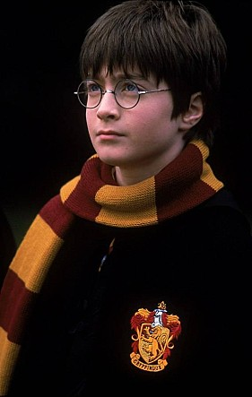

다니엘 래드클리프는무려 4만 명의 경쟁자를 물리치고 당당히 해리포터 역을 따낸 행운의 주인공. "다니엘이 방에 들어오는 순간 우리 모두는 해리포터를 찾았다고 생각했다"라는 크리스 콜롬버스 감독의 말처럼 운명적으로 해리포터가 되기 위해 태어난 소년. 1999년 11월 BBC TV의 <데이빗 커퍼필드 David Copperfield>에 타이틀 롤로 출연하며 배우로 데뷔했다. 그 때 함께 출연했던 매기 스미스와는 <해리포터와 마법사의 돌>에서 다시 한번 공연하게 됐다. 그 외에 영화 <해리포터와 마법사의 돌>에 출연하기 전, 존 부어맨 감독의 <테일러 오브 파나마 The Tailor of Panama>에서 제이미 리 커티스, 조프리 러쉬의 극중 아들로 출연해 스크린에 데뷔한 바 있다.
